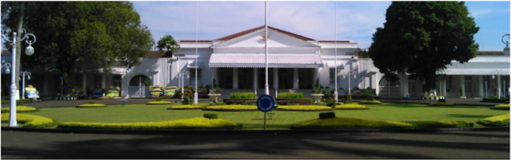

Pangandaran
Jawa Barat sebagai pengertian administratif mulai digunakan pada tahun 1925 ketika Pemerintah Hindia Belanda membentuk Provinsi Jawa Barat. Pembentukan provinsi itu sebagai pelaksanaan Bestuurshervormingwet tahun 1922, yang membagi Hindia Belanda atas kesatuan-kesatuan daerah provinsi. Sebelum tahun 1925, digunakan istilah Soendalanden (Tanah Sunda) atau Pasundan, sebagai istilah geografi untuk menyebut Pulau Jawa di sebelah barat Sungai Cilosari dan Citanduy yang sebagian besar dihuni oleh penduduk yang menggunakan Bahasa Sunda sebagai bahasa ibu.